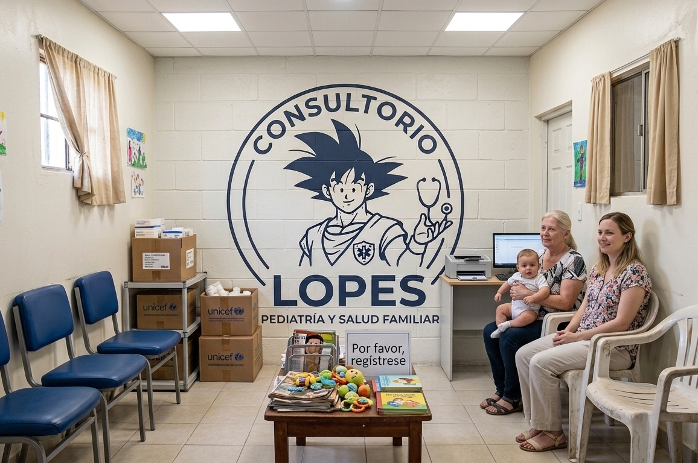

Informacion del Consultorio
Nuestro Consultorio se especializa principalmente en la medicina general pero tambien contamos con doctores especializados en distintos campo de la medicina unos ejemplos serian la oncologia, pediatria, la Dermatologia, Cardiologia y algunas otras mas.
